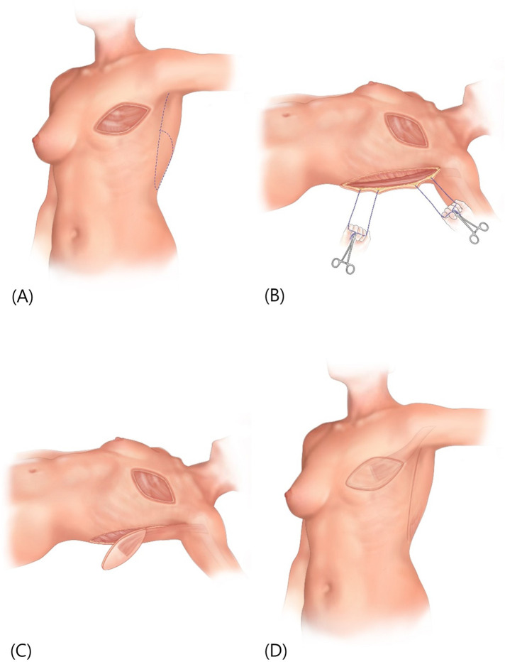

背中の大きな筋肉である広背筋（こうはいきん）を、その上の皮膚ごと血流を保ったまま移す「広背筋皮弁（こうはいきんひべん／latissimus dorsi flap、ラチシマス皮弁）」を、近代の再建外科に呼び戻した短い報告です。この皮弁のアイデア自体は1896年にイタリアのタンジーニ（Tansini）が乳がん手術後の欠損を覆う方法として先駆的に記載したものの、その後長く忘れられていました。1976年、オリバリ（Olivari）はこれを筋皮弁（きんぴべん＝筋肉と皮膚をひとかたまりにして運ぶ皮弁）として使い、とくに放射線を受けた胸壁（きょうへき＝胸の壁）の傷を覆う手術に応用したとされます。現在では乳房再建・胸壁再建・頭頸部再建などで最もよく使われる皮弁のひとつの、近代的な出発点に位置づけられる報告です。
背景 ― 忘れられていた「背中の筋肉の皮弁」
乳がんの手術（乳房切除）を受け、さらに放射線治療（がん細胞を放射線で叩く治療）を加えた後の胸の壁には、皮膚や皮下の組織が硬く傷み、なかなか治らない潰瘍（かいよう＝えぐれた傷）ができることがあります。放射線で傷んだ組織はもともとの血流が乏しく、その場所を単純に縫い縮めたり、皮膚だけを移植（植皮＝しょくひ）したりしても治りにくいとされます。こうした「血流の乏しい面」を覆うには、血流を持った組織の塊＝皮弁（ひべん）を、傷んでいない別の場所から運んでくる必要があります。
この目的にうってつけの候補が、背中にある大きく平たい筋肉「広背筋」でした。広背筋を養う血管は脇の下（腋窩＝えきか）から入るため、この筋肉を血管の茎（けい＝血流の通り道）でつないだまま前方へ回せば、胸の壁まで十分に届きます。じつはこの発想の原型は古く、1896年にイタリアの外科医タンジーニ（Iginio Tansini）が、乳がん手術後の胸壁の欠損を背中の皮膚で覆う方法として記載し、のちに広背筋を含める形へ発展させたとされます。
しかしタンジーニの方法はやがて広く使われなくなり、長いあいだ忘れられていました。手術の考え方が変わったことなどが背景にあるとされますが、原典の細かな経緯や数値は一次資料での確認が難しいため、ここでは断定しません。いずれにせよ、放射線後の胸壁のように「治りにくい傷を確実に覆える丈夫な皮弁」が改めて求められていた時期に、この古いアイデアを再評価したのが本報告にあたります。
この論文がしたこと
オリバリは、背中の広背筋を、その上の皮膚といっしょにひとかたまりの筋皮弁（きんぴべん）として挙上し、脇の下から入る血管を茎にしたまま前方へ回して、胸壁の欠損を覆う手術を報告しました。要点は、忘れられていた広背筋の皮弁を、近代の再建外科に「使える皮弁」として復活させたことにあります。
本論文は『The latissimus flap（広背筋皮弁）』という題の短い報告で、公開されている論文データベース上には構造化された抄録（要旨）が収載されていません。そのため本ページでは、原著が具体的に述べた症例数・生着率（皮弁が生き着いた割合）などの成績を、確認できないまま数字として挙げることはしません。
確からしく言えるのは、この報告が扱った中心的な応用が、放射線を受けた胸壁の欠損の被覆であったとされること、そして広背筋皮弁という選択肢を再び臨床の場に押し上げた点です。オリバリ自身はその後（1980年）にも、胸部欠損に対する広背筋皮弁の一連の経験をまとめて報告したとされ、この皮弁が定着していく流れをつくりました。
解剖と手技の要点
ここから先は、原著の短い報告そのものではなく、その後の解剖学的研究で整理されてきた一般的な知見です。広背筋は背中から腰にかけて広がる大きく平たい筋肉で、その主要な血流は胸背動脈（きょうはいどうみゃく＝thoracodorsal artery）に支えられるとされます。胸背動脈は脇の下を走る血管（肩甲下動脈＝けんこうかどうみゃくの枝）から分かれ、筋肉の裏面（体の内側を向いた面）へ入り込みます。
血管の入り口が脇の下にあることが、この皮弁の大きな利点につながります。入り口を支点にして筋肉を前へ回すと、胸の壁・乳房のあった場所・脇・肩のあたりまで有茎（血管の茎でつながったまま）で届くため、放射線後の胸壁のような前方の欠損を、遠くから皮膚を運ばずに覆えるとされます。
使い方には幅があります。筋肉だけを挙げてその上に植皮を組み合わせる方法、皮膚の島（皮島＝ひとう。筋肉の上に残した楕円形の皮膚のパッチ）ごと挙げて筋皮弁として使う方法、さらに血管ごと切り離して顕微鏡下で別の場所の血管に縫い直す遊離皮弁（ゆうりひべん）として遠くへ運ぶ方法もあるとされます。オリバリの原著が扱ったのは、このうち有茎の筋皮弁で胸壁を覆う使い方にあたります。

結果
この論文は『The latissimus flap』という短い報告で、公開されている論文データベースには構造化された抄録が収載されていません。したがって本ページでは、症例数・生着率・合併症の頻度といった具体的な成績の数値は記載しません（一次資料で確認できないためです）。
その制約のうえで確からしく言えるのは、この報告が広背筋の筋皮弁を放射線後の胸壁欠損の被覆に用い、忘れられていたこの皮弁を実用的な選択肢として近代の再建外科に呼び戻した、という点までです。以後、広背筋皮弁は乳房再建をはじめ多くの再建で広く使われるようになったとされます。
意義 ― なぜ再建外科の「働き者」になったのか
この報告は、広背筋の筋皮弁を近代の再建外科へ再導入し、広めた原著として広く引用されています。1896年にタンジーニが記した先駆的なアイデアが長く埋もれていたことを思えば、「時代を先取りしすぎた良いアイデアを、80年後に実用の水準へ引き上げた」報告と位置づけられます。
広背筋皮弁が評価される理由は、その丈夫さと使い勝手にあります。胸背動脈という太くて安定した血管に養われるため血流が信頼でき、筋肉自体が大きいので広い面積を覆えます。血管の入り口が脇の下にあるため、有茎のまま胸・乳房・脇・肩まで届き、放射線で傷んだ組織のように血流の乏しい面も、丈夫な筋肉で裏打ちしながら覆えるとされます。
こうした特徴から、広背筋皮弁は乳房再建・胸壁再建・頭頸部再建・四肢の再建など、幅広い場面で最もよく使われる皮弁のひとつ（ワークホース＝働き者の馬、日常的に頼りにされる皮弁の意）として定着していきました。有茎でも遊離でも使える汎用性の高さが、この皮弁を長く現役であり続けさせている理由とされます。
この論文の要点
- 背中の大きな筋肉・広背筋を、その上の皮膚ごと筋皮弁として挙上し、脇の下から入る胸背動脈を茎にして胸壁の欠損を覆う手術を報告した。
- とくに放射線を受けた（治りにくい）胸壁の潰瘍・欠損の被覆に用いられたとされる。
- この皮弁のアイデア自体は1896年にタンジーニが先駆的に記載したが長く忘れられており、本報告がそれを近代の再建外科へ復活させたと位置づけられる。
- 本論文は短い報告で、公開データベースに構造化された抄録がなく、症例数・生着率などの成績は一次資料で確認できないため本ページでは数値を挙げていない。
- 血流が安定し面積が大きく、有茎でも遊離でも使えることから、乳房・胸壁・頭頸部・四肢の再建で最もよく使われる皮弁のひとつ（ワークホース）へと発展した。
用語ミニ辞典
- 広背筋皮弁（ラチシマス皮弁）
- 背中の広背筋を、必要に応じてその上の皮膚（皮島）ごと血流を保ったまま移す皮弁。latissimus dorsi flap の日本語名。乳房再建・胸壁再建・頭頸部再建などで広く使われる。
- 広背筋（こうはいきん）
- 背中から腰にかけて広がる大きく平たい筋肉。主要な血流は脇の下から入る胸背動脈に支えられ、皮弁のドナー（提供部位）として使いやすい。
- 筋皮弁（きんぴべん）
- 筋肉と、その上の皮膚をひとかたまりにして移す皮弁。血流が安定し、血流の乏しい面を丈夫に裏打ちしながら覆えるのが利点。
- 胸背動脈（きょうはいどうみゃく）
- 脇の下の血管（肩甲下動脈）から分かれ、広背筋の裏面へ入る動脈。広背筋皮弁の主要な血流源で、thoracodorsal artery とも呼ぶ。
- 有茎皮弁 / 遊離皮弁
- 有茎皮弁は血管の茎でつながったまま移す皮弁。遊離皮弁は血管ごと切り離し、顕微鏡下で別の場所の血管に縫い直す皮弁。広背筋皮弁はどちらの使い方もできるとされる。
- 皮島（ひとう）
- 筋皮弁で、筋肉の上に残して一緒に運ぶ楕円形の皮膚のパッチ。これを使うと、失われた皮膚の面も同時に覆える。
- 放射線潰瘍（放射線後の胸壁欠損）
- 放射線治療で傷んだ皮膚・皮下組織にできる、治りにくい潰瘍。もともとの血流が乏しく、血流を持った皮弁での被覆が必要になるとされる。オリバリの報告が主に対象とした状態。
- タンジーニ（Tansini）の記載
- 1896年にイタリアの外科医タンジーニが、乳がん手術後の胸壁欠損を背中の皮膚で覆う方法として記した先駆的な報告。のちに広背筋を含める形へ発展したとされるが、長く忘れられていた。
本ページは形成外科の学習・参照を目的とした編集部によるオリジナルの日本語解説で、原著（英語）の逐語訳・全文転載ではありません。正確な内容・数値・図は必ず上記リンク先の原著をご確認ください。
掲載している図は、原著の図ではありません。原著の図は出版社が著作権を持ち転載できないため、同じ術式・同じ解剖を扱った無料公開（オープンアクセス／CC BY）論文の図を、出典とライセンスを明記して引用しています。